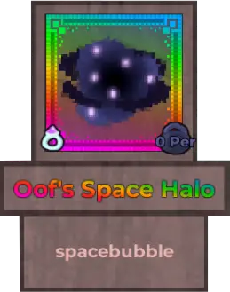
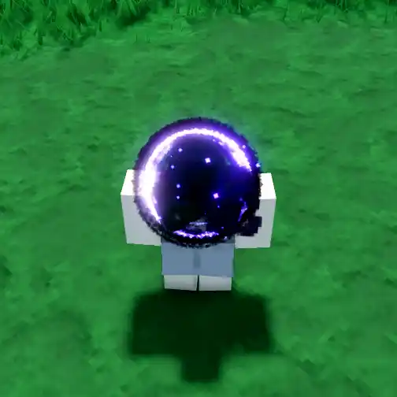
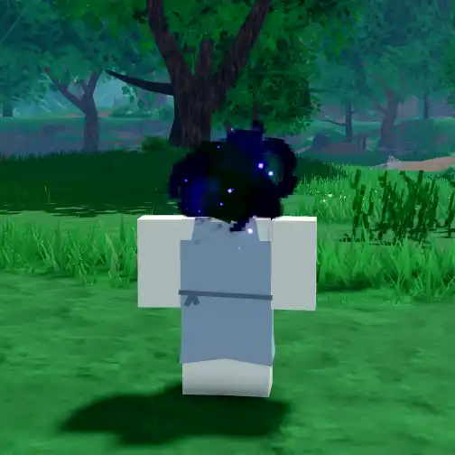
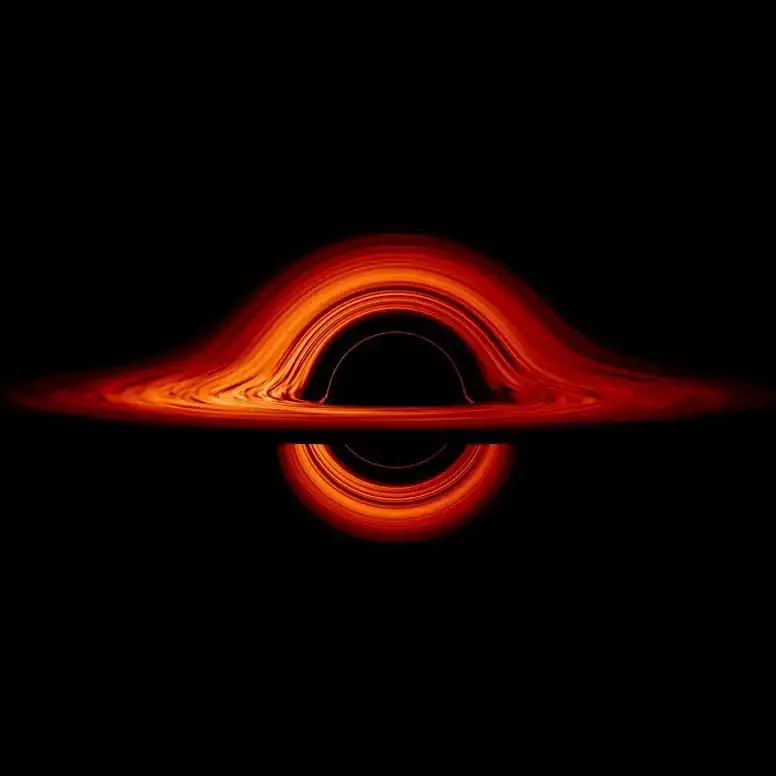
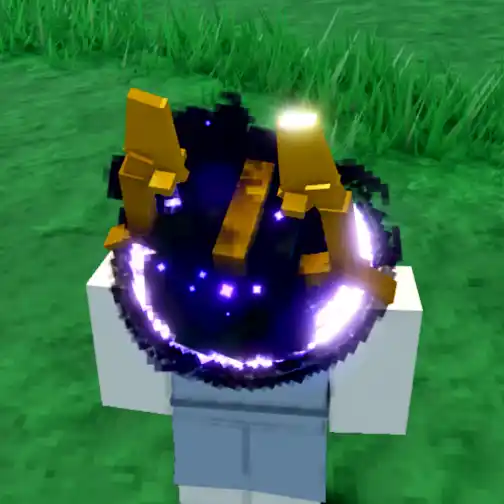
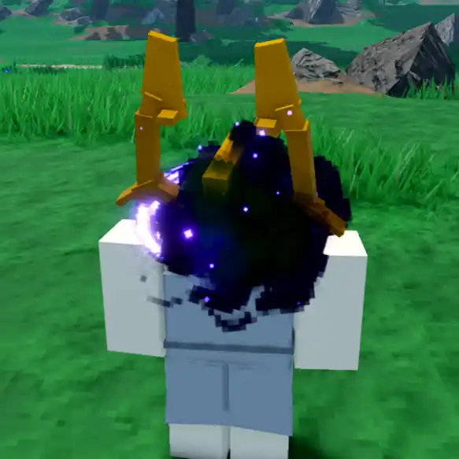

Oof's Space Head

Info
Slot: Accessory
Recolorable?: No
Unique Colors: None
Particle Effects: Yes
Sound Effects: None
Owner: OofBubble
Appearance & Effects
In-game description: spacebubble
Oof's Space Head is a galaxy that replaces the player's head. It has a central cloud that is made up of deep blacks and purples, with a ring of brighter purples and whites around the outside.
Inspiration
Oof's Space Head appears to be inspired by a black hole. The center looks like the event horizon of a black hole and the ring is very similar to the accretion disk of material that often appears around black holes. Oof's Space Head used to be named Oof's Space Halo.

Oof's Space Head viewed from above, where the disk is visible

The space head viewed from straight on, where the disk is not visible
Image Gallery

A real black hole for comparison - The accretion disk in this picture is similar to the disk on Oof's Space Head

Oof's Space Head worn with the Celestial Champion Helmet

Another angle of Oof's Space Head with the Celestial Champion Helmet